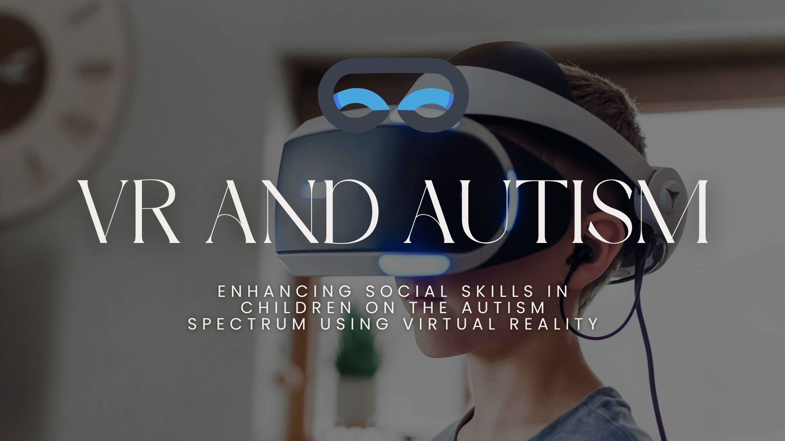

Introduction
For children with Autism Spectrum Disorder (ASD) and Intellectual Disabilities (ID), social interactions and sensory experiences can be overwhelming. Traditional therapies often struggle to engage these children effectively. Enter Virtual Reality (VR)—a groundbreaking tool that creates safe, controlled, and immersive environments for skill development.

At Link to Light, we harness VR to help children practice social cues, emotional recognition, and real-world interactions in a stress-free setting. Here's how VR is revolutionizing autism therapy.
1. Safe Spaces for Social Learning
Children with ASD often find unpredictable social situations stressful. VR offers:
- Controlled environments (classrooms, playgrounds, stores) to practice interactions.
- Gradual exposure to challenging scenarios (e.g., loud noises, crowded spaces).
- Repetition without real-world consequences, building confidence.
"VR allows my son to practice conversations at his own pace. He's now more comfortable greeting his classmates."
—Parent of a 9-year-old using Link to Light
—Parent of a 9-year-old using Link to Light
Ready to Try VR Therapy?
Discover how Link to Light can help your child develop essential social skills
Book a Free Demo